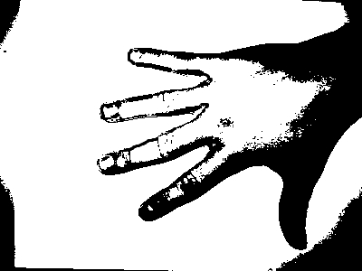
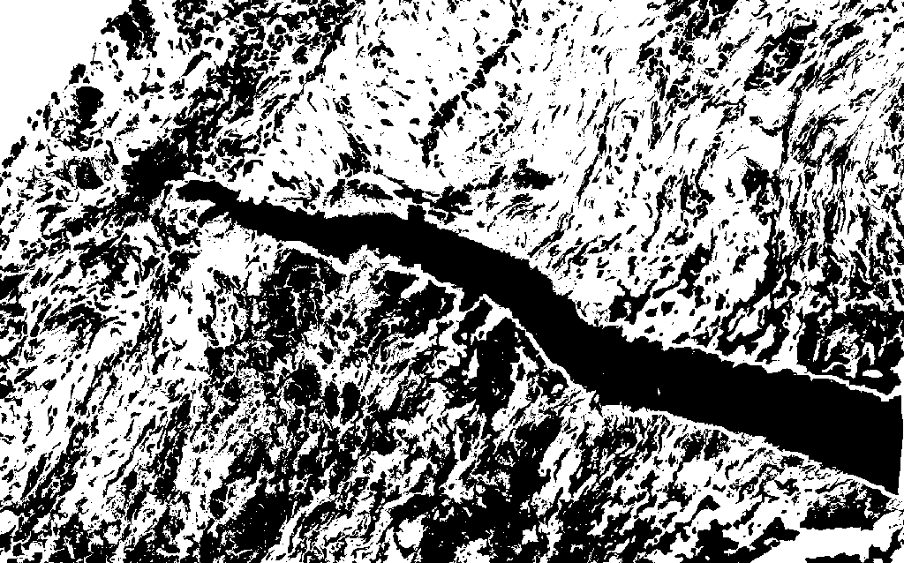
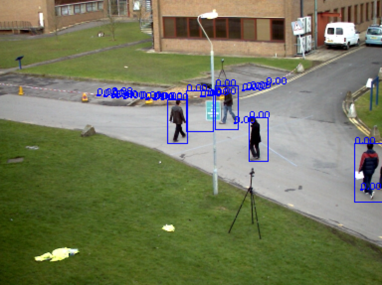

CS 585 HW 3
Alex Wong and Wei-Hsiang Lin
Feb 23, 2020
Part 1
Problem Definition
For Part 1, we are given binary images of hands and a stained tissue sample of a breast cancer tumor. We need to label the connected components, apply boundary following algorithm, compute image moment metrics and apply skeleton finding algorithm.
This is very important in the area of computer vision, because it lays as foundations for more complicated object segmentation problems.
Method and Implementation
Connected Components
Pre-Process Image
The first step is to preprocess the image using a variation of dilation, erosion, opening, closing, gaussian blur and thresholding. Depending on the situation, the operations vary slightly.
We usually use dilation to expand the image of focus; eg. filling a hole or merging lines together
We usually use erosion to do the opposite; break away small parts.
The combination of erosion and dilation, depending on which goes first, is known as 'opening' and 'closing'. Closing helps to remove small blobs and Opening helps to fill in holes.
Blur and Thresholding are additional operations used to remove unwanted pixels.
Flood Fill
The next step is to retrieve the connected components. To achieve this, I modified the usual flood fill algorithm to take in multiple colors as it iteratively traverses the image. The result is an image where different connected components have different colors (randomly generated).
Filter large components
Next, we find the biggest n connected components by counting the colors(eg. the most-occuring color denotes the largest connected component). We assume the largest component is the background (this works for the sample images provided), and thus, we don't take in account of the largest component. We take the 2nd to n-th component as our objects of focus.
Boundary Tracing
We find the boundary of our object of focus by using the boundary tracing algorithm. In short, it finds the first black pixel (start of the boundary), and then circles the black pixel clock-wise to find the next black pixel, which becomes the next pixel of our boundary. Eventually, it continues until we end up with the first black pixel we started with. By then, we already have a chain of black pixels, which is the boundary of our object of focus.
Image Moments
The algorithms used to calculate this is as follows:
Area and Center of Mass
Second Moment
Orientation
Skeleton Finding
An overview of this algorithm is that it continuously erodes the original image. At each iteration, we get the difference from previous and stores it (using bitwise_or). The result is a skeletion path of the image of focus
Results
The results were good, but it's important to keep in mind that it was fine-tuned manually. A new image may not work with the current parameters.
Original
Open Hand
Open Hand Partial
Open Fist
Tumor


Connected Components
Open Hand
Open Hand Partial
Open Fist
Tumor
Boundary Tracing
Open Hand
Open Hand Partial
Open Fist
Tumor
Skeleton Finding
Open Hand
Open Hand Partial
Open Fist
Tumor
Image Moments
Discussion
In general, I think the task was very successful. However, it is careful to note that each image was preprocessed using slightly different operations and this step is not generalizable. I can foresee future research to focus on detecting certain values (eg. average intensity values) and applying operations based on these values.
For this task, the library used included numpy, opencv and matplotlib. In opencv, the operations used are morophologyEx, gaussianBlur, treshold, erode and dilate. These have been explained previously already.
Conclusions
In conclusion, I think this task lays a good foundation on how to use erosion and dilation. These 2 operations are essential tools that will be useful for more complicated computer vision tasks.
Part 2.1 - Pianist Hand Segmentation
Problem Definition
In this task, we have a video of a pianist playing a piano. The camera is fixed, and the only thing that is moving in the scene is the pianist's body. We are trying to come up with a segmentation algorithm that segmentates the pianist hands and further label their bounding box on the video.
Method and Implementation
Subtracting Average Frame
Since the only object that's moving in the scene is the pianist himself, we figure that we might only need to focus on analyzing the region where is different when comparing to the average frame.
Average Frame
Subtracting with Average Frame
Region of Interest to Focus
After getting the ROI (Region of Interest) mask, we perform bitwise and with the original frame, so anywhere outside the ROI will appear as background.
Skin Detection
Next we perform skin detection algorithm to the objects that lies within ROI.
We will not explain the techniques used here in detail since we did it on hw2 already. Basically we tuned with different HSV thresholds and figure the values that best works on this dataset.
Skin Detection Result
We then perform a series of morphology operations and blurring + absolute-thresholding combination to reduce the noice in the detected skin mask. We decided that the details of the morphology and pre-processing technique will be explained during demo since it's not the core part of this task.
We then apply flood filling algorithm to capture objects of interest using `cv2.connectedComponentsWithStats()`. This function returns the number of labeled objects, the label map, the statistics of the objects, and the centroids of the objects.
We utilize these features of the objects plus some heuristics (area, position ..etc) to decide whether the objects is similar to a hand (single hand and overlapped hand are dealt with separately).
Floodfill & Heuristics (Single Hands)
Floodfill & Heuristics (Overlapped Hands)
Lastly we draw the bounding box of the segmentated object.
Results
Here are a couple frame snippets of the whole video.
Result Frame 1
Result Frame 2
The full processed video has been uploaded and can be viewed at:
Part 2.2 - Bat Detection
Problem Definition
In this task, we have two videos of bats flying around. The first video is shot using normal RGB camera while the second video is shot using infared camera. Similar to the previous task, the cameras are fixed, and the only things that are moving in the scene are the bats. We are again trying to come up with a segmentation algorithm that segmentates the bats. One thing that is different is that we also want to detect whether each bat is spreading or folding their wings.
We figured that the infared (false color) channel frames could be really useful to this task, but due to time issue, we only had the time to implement our algorithms on the RGB channel frames.
Method and Implementation
Subtracting Average Frame
Since the camera is fixed and the only objects that are moving in the scene are the objects that we are interested in capturing, we again subtract each frame with the average frame.
Average Frame
Subtracting with Average Frame
After Morphology
We noticed that the background comes in a gradient pattern, which might create difficulty if/when we apply absolute threshold to the frame directly. But we circumvented this problem by subtracting the average frame for each frame, which somehow discount the bias of this video dataset.
Flood Filling Algorithm
Next we apply `cv2.connectedComponentsWithStats()` to the frame. We drew bounding box around every bat that we detected:
Flood Filling
Note that we still tend to miss some rather small bats possibly due to morphology operation or background subtraction.
Bat Wing Spread-or-not Detection
After observing the video, we figure that the bats tend to conform to a more "circular" shape when they fold their wings, and not that "circular" when they spread their wings.
We implemented both circularity and aspect ratio, and decided a good threshold base on experiments to classify all the detected bats. Results are shown as follow:
Result Frame 1
Result Frame 2
We think that the detection result can be further improved by implement other object features such as orientation, second moments, compactness and so on. However due to time issue, we didn't had the time to implement that. Full processed video can be viewed at:
Part 2.3 - Pedestrian Detection
Problem Definition
In this task, we have a videos of pedestirans walking in a park. Similar to the previous task, the cameras are fixed, and the only things that are moving in the scene are the pedestrians. We are trying to come up with a segmentation algorithm that segmentates the pedestrian. On top of that, we are asked to count the total amount of pedestrians that appeared in the scene.
Method and Implementation
Subtracting Average Frame
Since the camera is fixed and the only objects that are moving in the scene are the objects that we are interested in capturing, we subtract each frame with the average frame.
Motion Difference Capturing
We also calculate for each frame the difference with the previous frame, so that we can keep track of the motion of the pedestiran.
After getting the frame mask that subtracted the average frame and the frame mask that subtracted the previous frame, we performed bitwise or operation to merge these two masks. The result of the merged mask turns out to make the area of the pedestrians more significant in the frame.
Average Frame
Subtracting Average Frame
Subtracting Previous Frame
Merged Frame Mask
Merged Frame Mask (Thresholded)
Flood Filling
Next we apply `cv2.connectedComponentsWithStats()` to the frame. We drew bounding boxes over every object we labeled:
Flood Fill

Pedestrian Detection
After observing the video, we figure that pedestrian's bounding are more "rectangular"-like. Hence we calculate the aspect ratio of the detected object and filtered out the objects that are too small.
Narrowing down the candidate objects, we lastly resize our pedestrian templates to the size of the object of interest, and calculate the normalized correlation score of that object w.r.t. each of the templates. The template and results are as follow:
Result1
Result2
We uploaded the process video to Youtube:
Discussion & Conclusions
In conclusion, I think this task lays a good foundation on how to combine multiple computer vision techniques to achieve object segmentation for different kinds of dataset.